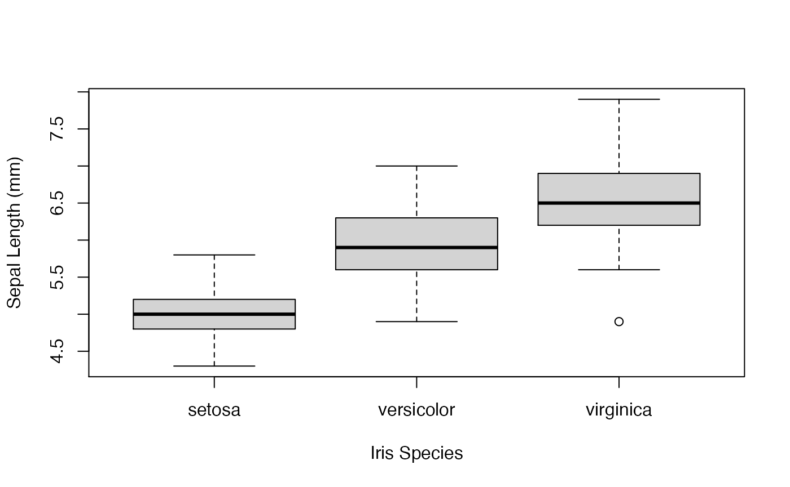
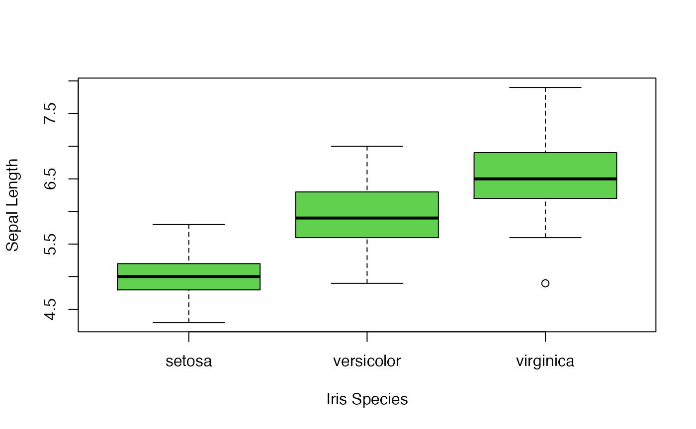
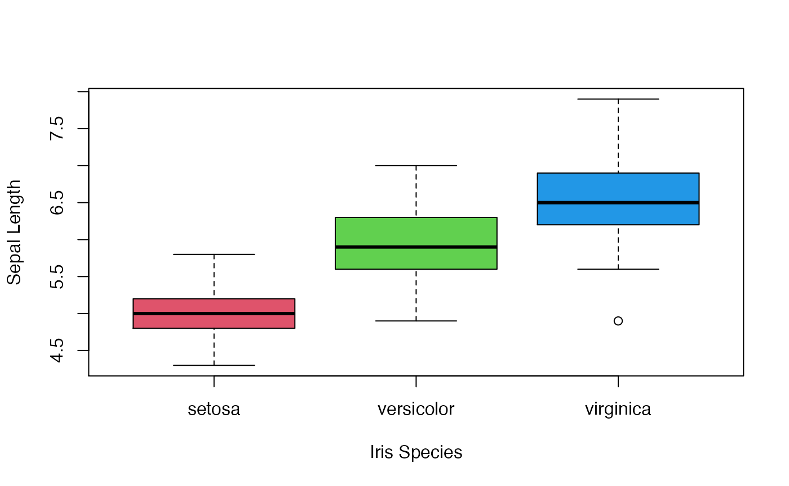
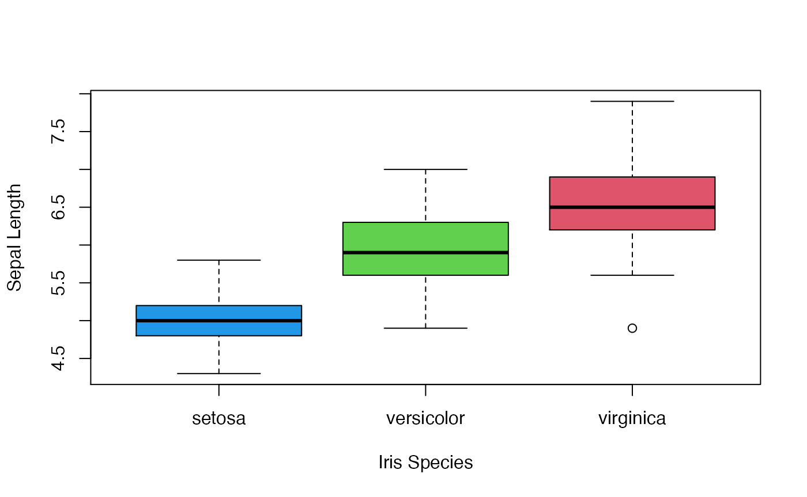
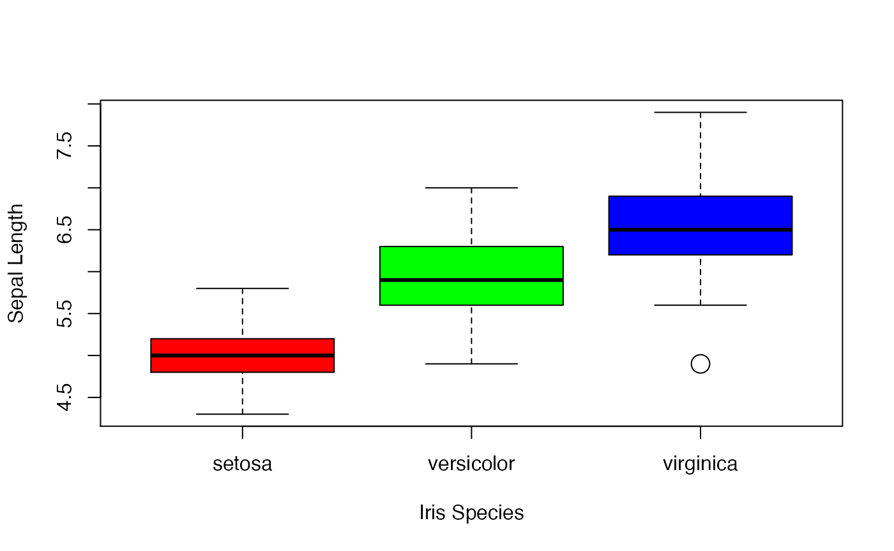
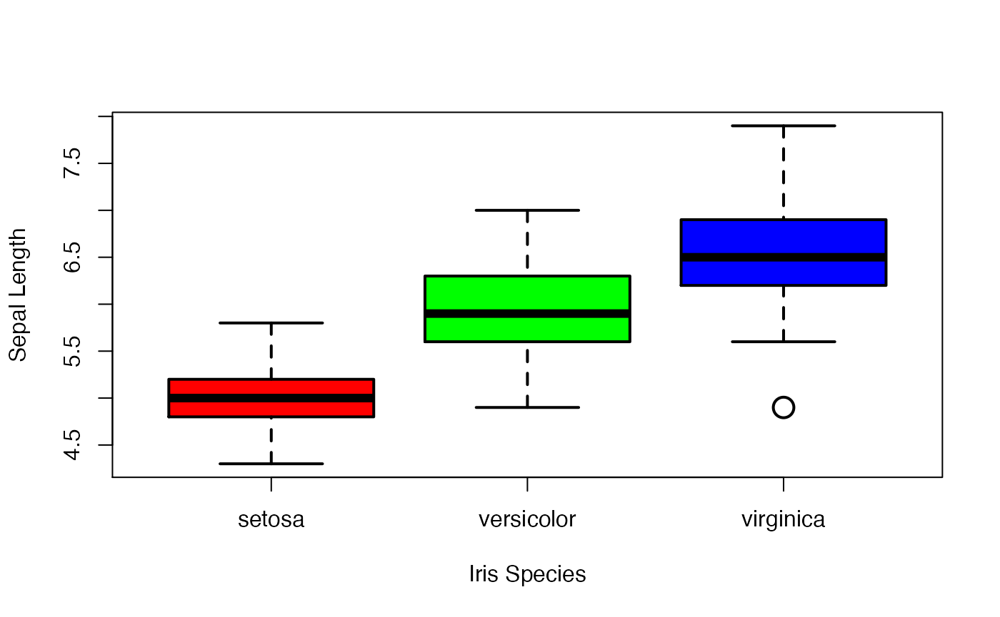
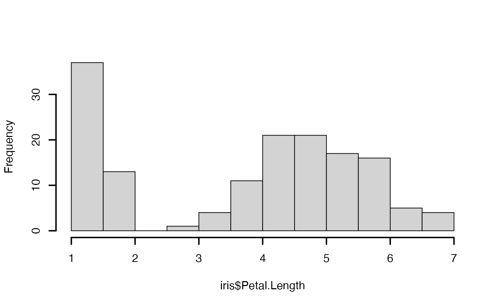
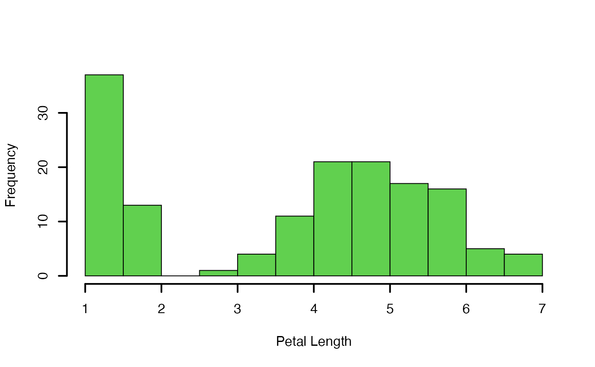

Displaying Data - boxplot() & hist()
plot-displaying_data_box_hist_base_R-NEEDS-IMAGES.Rmd
library(compbio4all)Lab 2: Displaying & Describing Data
Lab 2 outline
- Intro
- The Iris data
- Loading data: iris
- command: data(iris)
- Loading packages in base R: MASS
- command: library(MASS)
- Loading packages from CRAN: doBy
- Boxplots w/ iris data
- anatomy of an R function:boxplot(…)
- plotting arguments: xlab=, ylab=
- arguement: cex =
- arguement: lw =
- Histograms w/Iris data
- coomand: hist(…)
- Scatterplots w/iris data
Based generally on Chapters 2 & 3, Whitlock and Schulter, 2nd Ed
Example data for Lab 2: Fisher’s Irises
Frequently used to explain/test stats procedures

Fisher’s irises
See https://en.wikipedia.org/wiki/Iris_flower_data_set for more info.
Load data that is already in the “base” distribution of R
Fisher’s iris data comes automaically with R. You can load it into R’s memory using the command “data()”
#Load the iris data
data(iris)Look at the iris data
We’ll look at the iris data using some commands like ls(), dim(), and names().
You can check that it was loaded using the ls() command (“list”).
ls()
#> [1] "iris"You can get info about the nature of the daframe using commands like dim()
dim(iris)
#> [1] 150 5This tells us that the iris data is essentially a spreadhshett that has 150 rows and 5 columns.
We can get the column names with names()
names(iris)
#> [1] "Sepal.Length" "Sepal.Width" "Petal.Length" "Petal.Width" "Species"Note that the first letter of each word is capitalized. What are the implications of this?
The top of the data and the bottom of the data can be checked with head() and tail() commands
#top of dataframe
head(iris)
#> Sepal.Length Sepal.Width Petal.Length Petal.Width Species
#> 1 5.1 3.5 1.4 0.2 setosa
#> 2 4.9 3.0 1.4 0.2 setosa
#> 3 4.7 3.2 1.3 0.2 setosa
#> 4 4.6 3.1 1.5 0.2 setosa
#> 5 5.0 3.6 1.4 0.2 setosa
#> 6 5.4 3.9 1.7 0.4 setosa
#bottom of dataframe
tail(iris)
#> Sepal.Length Sepal.Width Petal.Length Petal.Width Species
#> 145 6.7 3.3 5.7 2.5 virginica
#> 146 6.7 3.0 5.2 2.3 virginica
#> 147 6.3 2.5 5.0 1.9 virginica
#> 148 6.5 3.0 5.2 2.0 virginica
#> 149 6.2 3.4 5.4 2.3 virginica
#> 150 5.9 3.0 5.1 1.8 virginicaAnother common R command is is(), which tells you what something is in R land.
is(iris)
#> [1] "data.frame" "list" "oldClass" "vector"R might spew a lot of things out at you when you use is(); usually the first item is most important. Here, it tells us that the “object” called “iris” in your workspace is 1st and foremost a “data.frame”, which is esseentially a spreadsheet of data loaded into R.
You can get basic info about the data themseleves using commands like summary().
summary(iris)
#> Sepal.Length Sepal.Width Petal.Length Petal.Width
#> Min. :4.300 Min. :2.000 Min. :1.000 Min. :0.100
#> 1st Qu.:5.100 1st Qu.:2.800 1st Qu.:1.600 1st Qu.:0.300
#> Median :5.800 Median :3.000 Median :4.350 Median :1.300
#> Mean :5.843 Mean :3.057 Mean :3.758 Mean :1.199
#> 3rd Qu.:6.400 3rd Qu.:3.300 3rd Qu.:5.100 3rd Qu.:1.800
#> Max. :7.900 Max. :4.400 Max. :6.900 Max. :2.500
#> Species
#> setosa :50
#> versicolor:50
#> virginica :50
#>
#>
#> If you wanted information on just a single column, you would tell R to isolate that column like this, using a dollar sign ($).
summary(iris$Sepal.Width)
#> Min. 1st Qu. Median Mean 3rd Qu. Max.
#> 2.000 2.800 3.000 3.057 3.300 4.400That is, that name of the dataframe, a dollar sign ($), and the name of the column.
What happens when you don’t capitalize something? Try this intentioanl mistakes:
#all lower case
# summary(iris$sepal.width) # this won't work
#just "s" in "sepal" lower case
# summary(iris$sepal.Width) #this won't work either
#or what if you capitalize "i" in "Iris"?
# summary(Iris$Sepal.Width) #won't work eitherThe 1st two error messages are not very informative; the 3rd one (“Error in summary(Iris$Sepal.Width) : object ‘Iris’ not found”) does make a little sense.
Load data that is in another R package part 1
Packages that come w/ R
Many scientists develop software for R, and they often include datasets to demonstrate how the software works. Some of this software, called a “package” comes with R already and just needs to be loaded. This is done with the library() command.
The MASS package comes with R when you download it and has many useful functions and interesting datasets.
MASS contains a dataset called called “mammals”
data(mammals)You can confirm that the mammals data is in your workspace using ls()
ls()
#> [1] "iris" "mammals"You should now have the iris and the mammals data in your R “workspace.”"
What is in the mammals dataset? Datasets actually usually have useful help files. Access help using the ? function.
?mammalsThe help screen you pop up. It tells us that mammals is
“A data frame with average brain and body weights for 62 species of land mammals.”
Since this is someone elses data, the authors of the MASS package need to provide proper citation. At the bottom we can see that these data come from the paper:
Allison, T. and Cicchetti, D. V. (1976) Sleep in mammals: ecological and constitutional correlates. Science 194: 732-734.
We can learn about the mammals data usig the usual commands
dim(mammals)
#> [1] 62 2
names(mammals)
#> [1] "body" "brain"
head(mammals)
#> body brain
#> Arctic fox 3.385 44.5
#> Owl monkey 0.480 15.5
#> Mountain beaver 1.350 8.1
#> Cow 465.000 423.0
#> Grey wolf 36.330 119.5
#> Goat 27.660 115.0
tail(mammals)
#> body brain
#> Echidna 3.000 25.0
#> Brazilian tapir 160.000 169.0
#> Tenrec 0.900 2.6
#> Phalanger 1.620 11.4
#> Tree shrew 0.104 2.5
#> Red fox 4.235 50.4
summary(mammals)
#> body brain
#> Min. : 0.005 Min. : 0.14
#> 1st Qu.: 0.600 1st Qu.: 4.25
#> Median : 3.342 Median : 17.25
#> Mean : 198.790 Mean : 283.13
#> 3rd Qu.: 48.202 3rd Qu.: 166.00
#> Max. :6654.000 Max. :5712.00Load data that is in another R package part 2
Packages from the CRAN website
Most packages don’t come with R when you download it but are stored in a central site called CRAN. We’ll load the doBy package.
Loading packages using R-Studio
RStudio makes it easy to find and load packages. Follow these instructions. A visual walkthrough is also avaialbel on D2L
- In the panel of RStudio that has the tabs “Plots”, “Packages”,“Help”, “Viewer” click on “Packages”"
- On the next line it says “Install” and “Update”. Click on “Install”
- A window will pop up. In the white field in the middle of the window under “Packages” type the name of the package you want.
- RStudio will automatically bring up potential packages as you type.
- Finish typing “doBy” or click on the name.
- Click on the “Install” button.
- In the source vieewr some misc. test should show up. Most of the time this works. If it doesn’t, talk to the professor!
If an R packages doesn’t load properly, it could be for several reasons.
* 1st, your internet connection might be having problems.
* 2nd, the website where the package is stored might be down for mainteance.
* 3rd, the version of are you are using is probably newer than the version of R used to make the package. This is a real pain - aks for help from an expert R user if think you have this problem.
Loading packages using code
You can also use the install.packages() command to try to load the package. I already have the doBy packaged downloaded to my computer so I have “commented out” the code with a “#”. To run the code, remove the “#”. If you already followed the instructions above you don’t need to run the code.
#install.packages("doBy")What if you tell R to install a package you already have downloaded?
If you already have the package downloaded to your computer then a window will pop up asking you if you want to restart your computer. Normally this isn’t necessary; just click “no”. You might see a “warning” message pop up in the console such as “Warning in install.packages: package ‘doBy’ is in use and will not be installed”. This isn’t a problem for basic R work. If you are doing serious work (e.g. for a publication) you should restart R.
What if I can’t get a package I need loaded?
- Talk to someone who is good w/R (eg, your professor)
- Google something like “how to install R package” for general info
- Google something like “problem loading R package”
- Copy and paste any error message you might be getting into Google and see if anyone has written about this problem
See above for reasons why a package might not load properly the 1st time you try.

Box plot with labels
R will usually generate labels for the x and y axes based on the command. These need to be changed.
The arguement “xlab =” sets the labels for the x-axis, “ylab” for the y axis.
Note that these both occur inside the paretheses, and that the text for the labels goes in quotes (ie, “Iris species”). Forgetting the quotes will cause the code to fail. Note that units (mm) are included for the y axis.
#boxplot w/ axes labels
boxplot(Sepal.Length ~ Species, #the plotting formula of y ~ x
data = iris, #the data to plot
xlab = "Iris Species", #Label for x axis
ylab = "Sepal Length (mm)" ) #Label for y axis, w/ units
Changing colors in R plots part 1
If we wanted we could change the color of the boxplots using the universal argument “col =”. This code can be used to change the color of most types of plots in R.
This doesn’t increase the information content of the figure but maybe makes it nicer to look at.
#boxplot w/color changes
boxplot(Sepal.Length ~ Species, #the plotting formula of y ~ x
data = iris, #the data to plot
xlab = "Iris Species", #Label for x axis
ylab = "Sepal Length",
col = 3) 
Changing colors in R plots - part 2
We can set the color of each box to somethingdifferent. This accents that each box is a differnet Iris species. The code “col = 2:4” tells R to use the sequence of colors “2, 3, 4”. (I skip “1” b/c its black and will obscure the bar that indicates the median).
#boxplot w/ each color different
boxplot(Sepal.Length ~ Species, #the plotting formula of y ~ x
data = iris, #the data to plot
xlab = "Iris Species", #Label for x axis
ylab = "Sepal Length",
col = 2:4) 
Changing colors in R plots - part 3
This next code uses a slight variant of the argument ** col = …* (I’ve reversed the order of the colors, just so you can see the difference.) I’ve used “col = c(4,3,2)” which is just longhand for “col = 4:2”. As is common in R, there is more than 1 way to do the exact same thing.
#col arguement w/explicit vector of colors
boxplot(Sepal.Length ~ Species, #the plotting formula of y ~ x
data = iris, #the data to plot
xlab = "Iris Species", #Label for x axis
ylab = "Sepal Length",
col = c(4,3,2)) 
More on The “c(…)” Function
This stands for “concatenate” ## This shows up a lot in R code. ## can have numbers inside it, separated by a colon ### c(2:4) ## can have numbers in it, sep. by commas ### c(4,3,2) ## can have text in it, sep by commas AND w/ " " around each word ### c(“red”,“green”,“blue”)
Tweaking plots: the cex = arguement
Run the code below, which includes the new arguement “cex =2” and see what happens. Can you see what changed?
#boxplot w/cex = 2
boxplot(Sepal.Length ~ Species, #the plotting formula of y ~ x
data = iris, #the data to plot
xlab = "Iris Species", #Label for x axis
ylab = "Sepal Length",
col = c("red","green","blue"),
cex = 2) #cex set to 2
“cex =” increases the size of elements within plots (usually points)
It might be hard to see, but “cex” stands for “character expansions” and it has “expanded” the size of the outlier dot in the virginica data on the far right of the plot.
Tweaking plots: lwd arguement
Run the code below, which includes the new command “cex =2” AND “lwd = 2”. This stands for “line width” and essentially makes all of the lines in the plot “bold”, including the line for the outlier circle.
This is often a good thing to do to make plot elements easier to see (especially if you are showing them on Powerpoint!)
#cex and lwd
boxplot(Sepal.Length ~ Species, #the plotting formula of y ~ x
data = iris, #the data to plot
xlab = "Iris Species", #Label for x axis
ylab = "Sepal Length",
col = c("red","green","blue"),
lwd = 2,
cex = 2) #cex set to 2
Histograms
You should make them all the time for you data!
This code makes a histogram of one of the iris species’ Petal.Length.
Note that the $ appears between the data, iris, and the column of data you want to plot, Petal.Length. NOte that the “P” and “L” have to be capitalized.
hist(iris$Petal.Length)Modifying histograms: titles with the main = argument
For some reason the hist() command automatically puts a title above the plot. Titles are good for your own use but acutally are almost never used in figures published in papers and books. We can get rid of the title using the arguement “main =”" “. This is telling R to turn the”main title" into nothing.
hist(iris$Petal.Length, main = "")Modifying histograms: cex
What happens when we add cex to the histogram?…
#histogram with cex=2
hist(iris$Petal.Length, main = "", cex = 2)…nothing.
Note that R does nothing, and doesn’t tell you anything. The cex = arguement does not apply to histograms, but R will still run the code.
Modifying histograms: lwd
What about lwd = … ?
#hist() with lwd =
hist(iris$Petal.Length, main = "", lwd = 2)
For some reason this only makes the axes of the histogram thicker, not the boxes themselves. This is a quirk of R.
It makes sense (to me) that if “lwd = 2” made the boxes in a boxplot bigger, it would make the bars in a histogram bigger.
Modifying plots: par()
The way to make the lines that make up a boxplot thicker requires another command, called, par() that is run separately from hist(). I don’t want to get into the details right now, but this code will make the bars bigger in the boxplot. Note that all your plots from now on will also have thicker bars. This is b/c par sets a “global” feature of your R session.
Finding R help with Google
There’s lots of info about R on the web, and if you have a problem, then someone else has probably had it before and perhaps written somethign about it.
Google this: “R histogram make boxes thicker”
In my browser the 1st thing to come up is
R - histogram rectangles line thickness - Stack Overflow http://stackoverflow.com/questions/24715055/r-histogram-rectangles-line-thickness
The website stackoverflow.com has lots of info about R. However, many people who use it are hard-core programmers, who can come accross as jerks sometimes when they answer questions if you don’t follow the rules and protocols of stackoverflow.
This post on histograms happens to provide a clue as to how to use par() to fix our problem, though its not 110% straightforward
Modifying histograms: color
We can change the color of the fill of the histogram
hist(iris$Petal.Length,
main = "",
lwd = 2,
col = 3)Modifying histograms: axis labels
And we can add an x axis label. (The y axis is already labeled)
hist(iris$Petal.Length,
main = "",
lwd = 2, col = 3,
xlab = "Petal Length")
Scatter plots: 2 continuous variables
Let’s make a scatter plot, where we plot two continous, numeric variables against each other (both x and y variables are numbers; not categories)
I’ve forgotten the names of all the iris variables, so I’ll use the names() command to see what they are
names(iris)
#> [1] "Sepal.Length" "Sepal.Width" "Petal.Length" "Petal.Width" "Species"I’ll plot the sepals against the petals
plot(Sepal.Length ~ Petal.Length, data = iris)